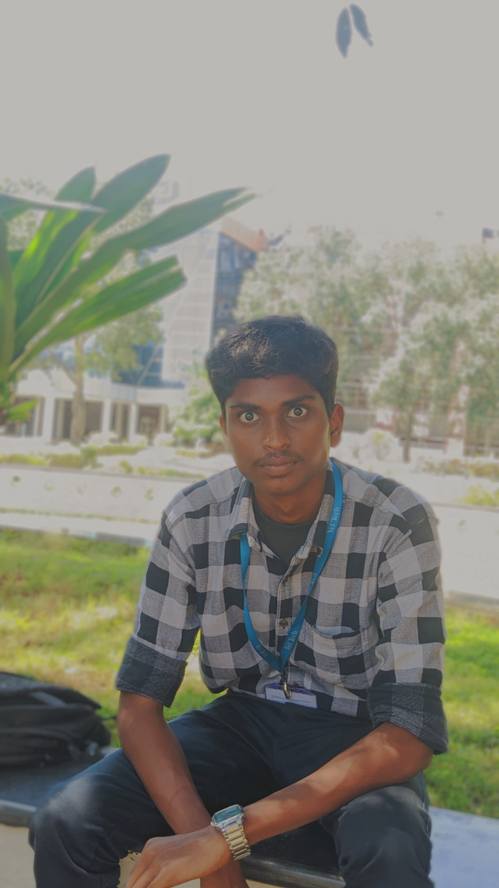

01
Civic-Sync ↗
An AI-powered spatial civic intelligence platform concept that connects citizen reports, geospatial signals and municipal coordination for smarter issue triage.
Explore projectI’m Indrajit Yadav — an AI & full-stack developer in the making, turning ambitious ideas into useful digital products.

I’m a B.Tech student in Electronics & Communication Engineering, specialising in AI & Data Science at Vel Tech. I enjoy the space where intelligent systems, thoughtful software and real-world problems meet.
From building full-stack platforms to experimenting with computer vision and AI workflows, I learn by making things. I care about clean execution, practical impact and turning a rough idea into something people can actually use.
An AI-powered spatial civic intelligence platform concept that connects citizen reports, geospatial signals and municipal coordination for smarter issue triage.
Explore projectA multilingual AI-powered experience designed to make Indian government services and scheme information easier to discover and access.
Explore projectA speech-AI project exploring synthetic and voice-cloned speech detection using deep-learning-based audio analysis.
Explore projectAn AI workspace concept exploring intelligent agents, document workflows, knowledge management and automation in one experience.
Explore projectA selection of project work and concepts. Details can evolve as development continues.
My toolkit keeps growing. I like learning technologies in context — by using them to solve a real problem, not just collecting names on a list.
B.Tech, Electronics & Communication Engineering — Specialisation in AI & Data Science.
Computer Science · Government Higher Secondary School, S.M. Nagar, Avadi.